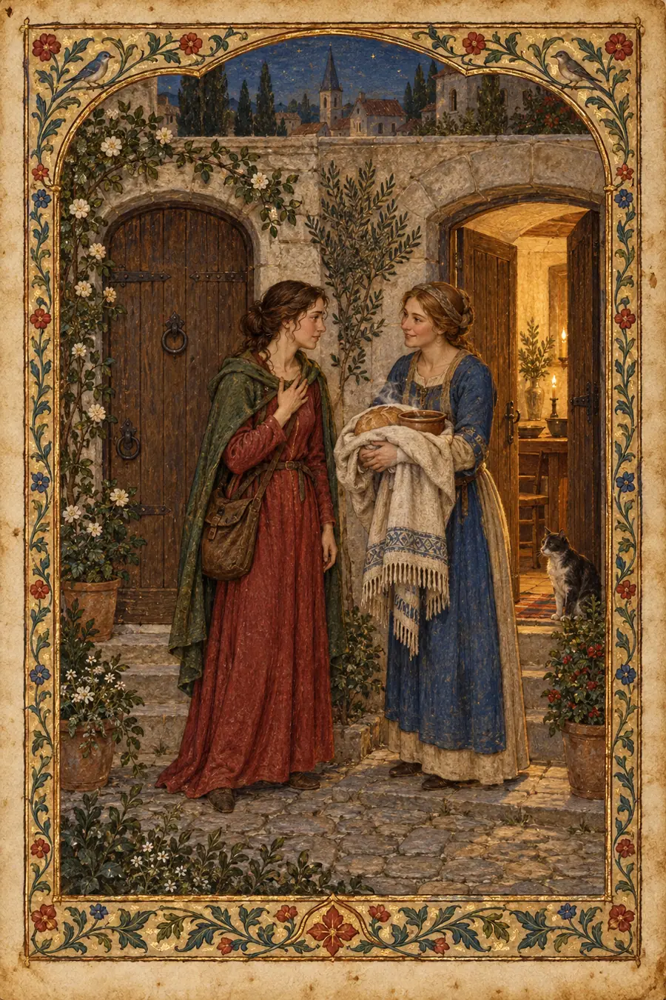
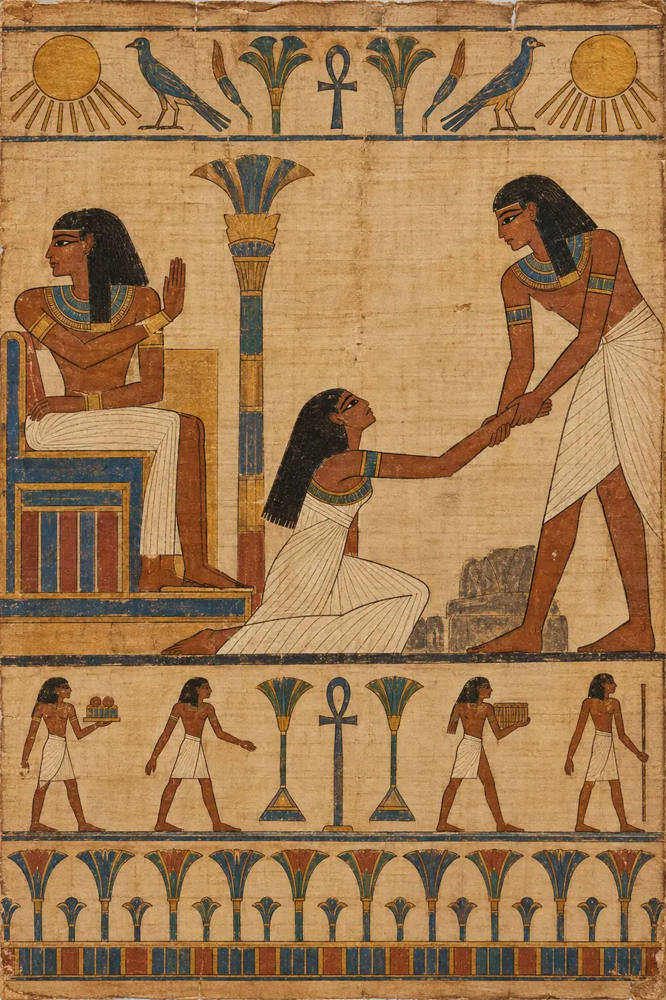
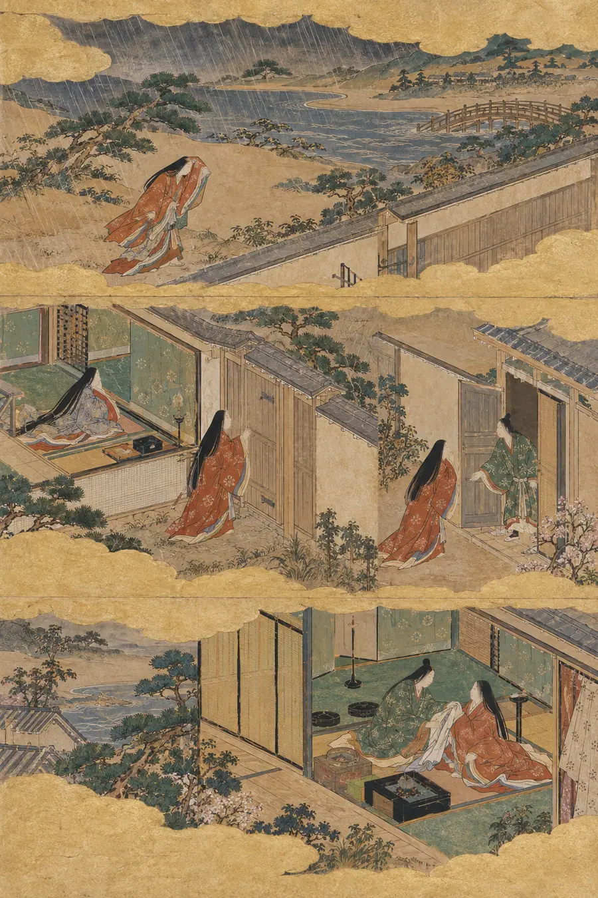
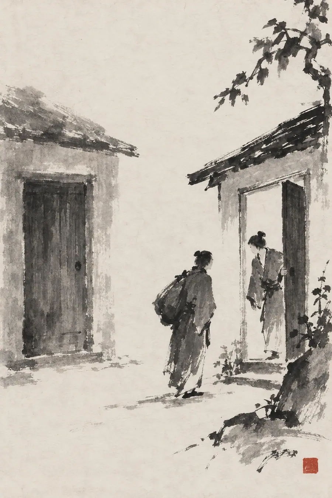
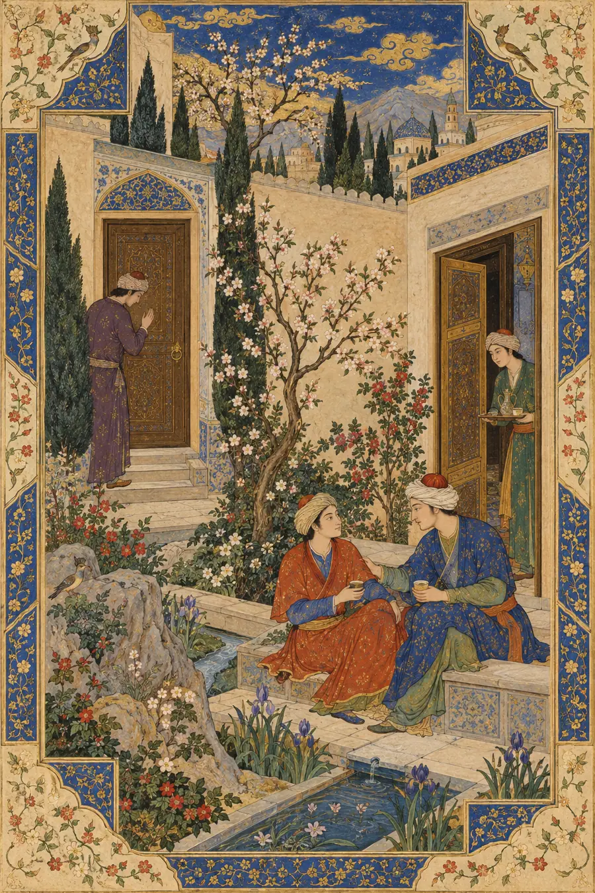
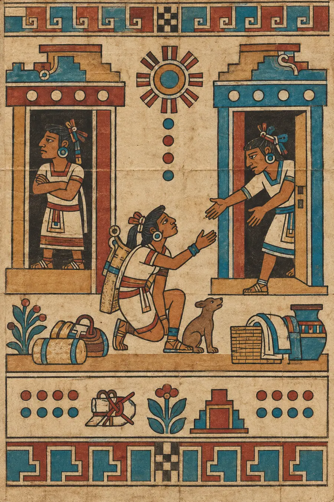
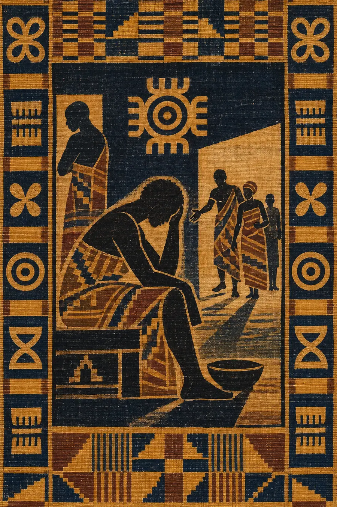

I. The Logical Explanation
An expectation is a belief about how another person will behave. Expectations in relationships are shaped by shared history, explicit agreements, social roles, and perceived closeness. When an expectation is unmet, the disappointed person may update their belief about the other's reliability, clarify the expectation, or adjust the relationship. Misplaced expectations occur when the expected behavior is unreasonable, the other person was not aware of it, or the relationship does not support that level of obligation.
This model sounds fair and complete. It can also quietly put the blame in the wrong place. It treats the need for someone to show up as a forecasting error, as if the injured person should simply have expected less. But some expectations are not excessive. They are the ordinary weight of a relationship: that care will sometimes move both ways, that a friend who calls you their closest person will care when you call them, that the person you support will not treat your need as an inconvenience. The mistake may not be expecting care. The mistake may be having entrusted that expectation to someone who does not or cannot carry it.
II. The Felt Explanation
Love can be given without a ledger. A relationship cannot live on one person's giving alone.
There is a difference between offering kindness without demanding a return and pretending that a connection needs nothing back. The first is generosity. The second can become disappearance. A relationship is made between people; it cannot be made by one person privately supplying both halves. There must be some expectation in it—not identical gifts, not a guaranteed response every time, not a claim over another person's body or time, but the expectation that the other person recognizes the bond and has some willingness to answer it.
The word expectation gets blamed for the wound. It sounds like a demand, a contract, a bill presented after a gift. But the expectation at the center of a real friendship is often simpler: I thought I mattered enough that, when I called, you would care that I needed you. That isn't a demand for perfect availability. It is what the word friend was carrying in the first place.
The misplaced part is the address.
You place a name on the envelope—ride or die, spouse, best friend, family—and believe the title tells you where to send the need. Sometimes the envelope comes back unopened. Someone you thought would cross the city is nowhere to be found. And the person you thought was only a casual friend is suddenly beside you, sleeves rolled up, already asking what needs doing. The shock is not that a casual person did something kind. The shock is that their action has shown you which relationship was real in the hour you needed one.
This is a terrible way to learn. Crisis is a harsh examiner: it tests the bond when the cost of answering is no longer theoretical. But the call does not make a person into someone else. It reveals the weight they were willing or able to carry. A person may care and still be unable to come; illness, fear, work, disability, distance, and their own emergency are real. One missed call cannot tell the whole story. What matters is the pattern: whether they acknowledge the absence, whether they try to repair it, whether your need can exist in the relationship without becoming an accusation against you.
Aristotle's Nicomachean Ethics draws a hard line that polite modern speech often blurs: wishing someone well is goodwill; friendship requires that goodwill to be mutual and known. The one-sided well-wisher is not foolish for caring. But care alone does not make a shared friendship. The distinction is not cruel. It gives the lonely person language for what they have been carrying: I loved them; that does not mean they were meeting me in the relationship I thought we had.
Confucian xìn (信)—trustworthiness, making one's word dependable—turns attention from a person's title to the practice by which they become someone others can rely on. A promise is not a flattering label. It is a word made credible by conduct. The person who says "call me anytime" has offered a claim; the later call gives that claim a place to become real. Confucian friendship also asks the self to examine whether it has been trustworthy to friends. The measure runs both directions. Being the one who always keeps the word does not, by itself, prove that the other person has made the same commitment.
The Sigālovāda Sutta, a Buddhist discourse for lay life, describes relationships—including friendship—in terms of responsibilities that move in both directions. Its image is not a market exchange where every kindness must be repaid by Friday. It is a map of how people protect one another: generosity, kind speech, acting for a friend's welfare, impartiality, honesty; and a friend, in turn, is someone who stands by you when you are careless or afraid. The teaching matters because it refuses two false choices: that love is a ledger, or that love asks nothing of anyone. Care can be freely given and still belong to a relationship with mutual obligations.
Marcel Mauss's account of gift-giving shows why a gift is rarely as solitary as it looks. Giving, receiving, and returning can bind people into a shared social world. But a living relationship is not a collections agency. The return need not be the same act, equal in price, or immediate. What the gift seeks is not repayment but recognition that something passed between people and changed what they may reasonably mean to one another. The pain of an unanswered call is not simply "I gave, now you owe me." It can be: I thought we had made a bond together; I have just learned I may have been holding it alone.
The Andean idea of ayni is often rendered as reciprocity, but it should not be reduced to a private favor ledger. It names participation in a living balance of giving and receiving among people and the wider world. That balance can be unequal at any one moment: a baby receives more than they can return; an ill friend may be carried for months; later, the roles can shift. The point is not equal output. It is that no one person is silently assigned to be the permanent ground under everyone else's feet. If one person's generosity becomes the only thing keeping the relationship alive, the appearance of balance can hide a serious tilt.
Ubuntu is often expressed through the Nguni phrase umuntu ngumuntu ngabantu—a person is a person through other people. It is not a slogan that says the individual must dissolve into service. Its force is mutual: our lives are made and upheld in relation, so the relationship itself has to make room for more than one person's needs. To say "I am because we are" while one person is never allowed to need the other would keep the word we and quietly remove the other person from it.
Japanese giri—social duty and obligation—can illuminate how a bond carries responsibilities beyond spontaneous feeling; ninjō, human feeling, keeps that duty from becoming a machine. Neither should be flattened into "Japanese people repay favors." Together they help pose the live question: is care being offered because the relationship is alive, or is someone trapped performing a role after the other side has stopped meeting them? Duty may hold people through a hard season. It cannot make a one-sided connection mutual by itself.
Martin Buber's I and Thou makes the encounter, not the category, decisive. A person called "ride or die" can still be treated as a function—your rescuer, your provider, the dependable one. A casual friend can meet you as a whole person at the exact hour the title-bearing friend cannot. The relation becomes real in the encounter: the specific call answered, the need heard, the refusal given honestly, the absence acknowledged. A role can point toward a relationship, but it cannot perform one.
The line you remembered from Anton LaVey's The Satanic Bible—"Satan represents kindness to those who deserve it instead of love wasted on ingrates!"—is the fourth of the Nine Satanic Statements, reproduced by the Church of Satan. It offers a sharp provocation: kindness need not be spent without discernment. But the word deserve can become its own trap if it turns hurt into a verdict that another person is worthless. This skill takes the narrower, more useful lesson: do not keep giving the deepest duties of a relationship to someone whose repeated actions show that they will not carry them. You can stop investing there without deciding that the person deserves contempt or that you must become hard to everyone.
Here is the paradox: the expectation was not necessarily too large; it may have been sent to the wrong address. And the answer is not to stop expecting anything from anyone. That would make the self safe by making connection impossible. The answer is to let expectation follow evidence, to say what the relationship means to you, to notice whether the other person responds—not only in crisis, but in ordinary patterns—and to make room for new evidence when it comes.
That takes time because the old title is often louder than the quiet friend carrying the bags. It takes courage because the person who always provides may feel morally bound to keep doing so, even after the other person has stopped showing up. It takes grief because you are not only disappointed in a missed call. You are losing the version of the relationship you thought you had. And it takes restraint because one emergency cannot tell you everything: a person may fail once and return with honesty, or succeed once and never again be present. A single rescue does not automatically make someone ride or die; a single failure does not automatically erase a real history. Watch the pattern, including repair.
The moment the casual friend shows up, the story changes. Not because the absent friend has become evil and the present one has become a saint. Because the call has moved the word connection from the mouth into the world. One person did not answer. Another did. You now know something you could not know from the labels alone.
The moral engine can complicate this further. A person who takes their word seriously may keep giving because they believe that being good means never withdrawing, never disappointing anyone, never making another person feel the absence they have felt. That integrity is real. But integrity does not require making a one-sided arrangement permanent. A promise made freely matters; a yes extracted by pressure may need to be revisited. Your moral rule can include your own place in the circle of care: I will not use my reliability as proof that I have no needs.
What a relationship asks of you is not that you keep score. It asks that you stay awake to whether both people are in it. There is a difference between a season when one carries more and a structure where one person is always the carrier. In the first, the carried person still sees the weight and responds as they can. In the second, the weight disappears from everyone's sight except the person bearing it. The one who has gone numb may not have stopped loving. They may have learned that reaching toward this particular person costs more than not reaching at all.
III. The Tests
Test 1 — The Call
In a frightening week, you call the person who has repeatedly called you their ride-or-die. They do not answer. A casual friend hears what happened and arrives with food, a charger, and no speech about loyalty. What has the night shown?
Hollow answer: "Now you know who your real friends are. The absent person was fake; the casual friend is your true ride-or-die."
Why it's hollow: It replaces one label with another and turns a painful night into a final courtroom verdict. It does not ask why the first person was absent, whether they repair it, or what the second person's action means beyond that hour.
Felt answer: The call has shown you who answered this call. That is real, and it matters. You do not have to pretend the absence did not hurt just because a story about the person's reasons may come later. Nor must you decide, before the week is over, that one night explains their entire character. Let the action count; let the pattern and the repair count too. The friend with the food has done something no title can do: they have made the connection present in the room.
Test 2 — The Permanent Provider
One person is always the one who drives, pays, listens, fixes, and rearranges their plans. They say they expect nothing in return. Years later, they realize they have stopped calling the others when they are in trouble. What has happened to the connection?
Hollow answer: "They are exceptionally selfless and should continue giving without keeping score, since true generosity does not expect reciprocity."
Why it's hollow: It praises the exact condition that may have made the relationship disappear: one person provides so completely that nobody has to notice they are also a person who might need help. It confuses an unpriced gift with a relationship that needs no mutuality.
Felt answer: Their generosity may have been sincere. The numbness is also evidence. Somewhere along the way, they learned that asking would not reach anyone, so they stopped sending the call. That isn't proof that every act of care was fake; it is proof the arrangement has become too one-sided to risk their need in. The next question is not "how do I become even more generous?" It is "who has shown they can hear me, and can I tell them what I need before I vanish from the relationship entirely?"
Test 3 — The Rejected Intimacy
A spouse has repeatedly declined intimacy. The other spouse has stopped initiating. They feel numb and tell themselves that if intimacy happens, it happens; if not, they expect nothing. What truths must a careful answer hold together?
Hollow answer: "They deserve intimacy because they have been a devoted partner." Or: "No one owes anyone anything, so they should simply accept the situation and stop wanting it."
Why it's hollow: The first turns care into a debt payable in sex and violates consent. The second uses consent as a reason to deny that relational needs and hurt matter. It offers a choice between entitlement and self-erasure.
Felt answer: No one owes sex or intimacy; consent must remain freely given. And a person may still grieve the loss of closeness, ask honestly whether both partners want to work on it, and decide what kind of relationship they can live in. Repeated rejection can teach the reaching hand to stay down. That numbness may protect them from another wound, but it does not prove they stopped needing connection. The conversation is about whether mutual intimacy can be built—not how to extract it.
Test 4 — The Unspoken Contract
You believe that because you have stood by a friend through years of difficulty, they will stand by you when your own crisis comes. You never said this aloud. When you ask, they are surprised that you expected them. Were you wrong to expect it?
Hollow answer: "Yes. You cannot expect people to read your mind. If you needed support, you should have asked clearly and never assumed the relationship was reciprocal."
Why it's hollow: It contains a useful point about communication but uses it to erase the reasonable meaning of shared history. If every expectation must be negotiated from zero, then years of friendship have no accumulated meaning.
Felt answer: You may have had a real expectation and still need to make it explicit now. The mismatch does not prove you were foolish for believing the relationship meant something; it shows you understood its contract differently. Say what you thought was shared, ask what they believed, and listen to whether they can meet you in the conversation. Some expectations deserve a direct request. Some absences reveal that the relationship was never carrying what you thought it was. Naming it gives both people the chance to find out which.
Test 5 — The Friend Who Could Not Come
A usually dependable friend misses your call during a crisis. Later, you learn they were caring for a sick parent and did not see the phone. They call back, apologize, and ask what you still need. Does the failed call prove your expectation was misplaced?
Hollow answer: "Yes. They were not there when it mattered, so you should not rely on them again." Or: "No. They had a good reason, so you should not feel hurt."
Why it's hollow: Both answers make one event carry the whole relationship. The first ignores human limits; the second asks the hurt person to erase their experience because an explanation exists.
Felt answer: The need was real. The absence happened. The reason is real too. A relationship is not proved by impossible availability; it is shown in how people respond to limits and repair. Your friend could not come then, but they returned, told you why, apologized, and stayed present afterward. That is evidence of care—not a time machine that makes the lonely hour disappear. You can hold both without making either one cancel the other.
Test 6 — The Quotation
Someone cites LaVey's line about kindness to those who deserve it instead of love wasted on ingrates after a friend fails to show up once. They conclude that the friend is unworthy and deserves nothing more. What is the error?
Hollow answer: "They are right. Stop wasting your kindness on people who do not deserve it." Or: "That quote is cruel; love should always be unconditional."
Why it's hollow: The first turns one failure into a verdict and uses discernment as permission for contempt. The second demands boundless giving and ignores that a connection needs mutual care to remain a relationship.
Felt answer: The line is a provocation about where you invest kindness, not a shortcut around understanding. One missed call may be inability, not indifference; a repeated pattern of taking and never turning toward you is different. You can reduce what you entrust to someone without declaring them worthless. The boundary is about what role their actions have earned in your life, not whether they deserve basic humanity.
IV. The Failure Mode
The hollow answer makes one of two symmetrical mistakes. It says either you expected too much—so stop needing, stop asking, keep giving—or they owe you—so your care entitles you to a return. Both turn a relationship into a verdict: the first against the person who needed care, the second against the person who could not or would not provide it.
A subtler failure is letting a title do the work of evidence. "Ride or die" is treated as proof of reliability, or one absent call as proof of permanent betrayal. A felt answer lets the title point to a hope, then looks at conduct, context, pattern, and repair. It can name a wound without sentencing a whole person on incomplete evidence.
The felt answer does not tell people to expect nothing. It understands that generosity can be unconditional while a relationship remains mutual; that care does not demand exact repayment, yet it needs recognition and some movement from both sides; and that the expectation may be sound even when it was placed in the wrong hands. It can redirect trust without shutting down the capacity to connect.
It does not call the reliable person a fool for keeping promises. It asks whether their reliability has been turned into a one-person contract, and whether their own needs are allowed to exist inside it. It does not treat the absent friend as irredeemable. It asks what happened, whether this is a pattern, and whether repair follows. It does not use "unconditional love" to sanctify a relationship in which only one person is expected to show up.
The test is always: does the answer understand that mutual care is not too much to expect, but that it must be entrusted to people whose actions can carry it—or does it only tell the giver to need less?